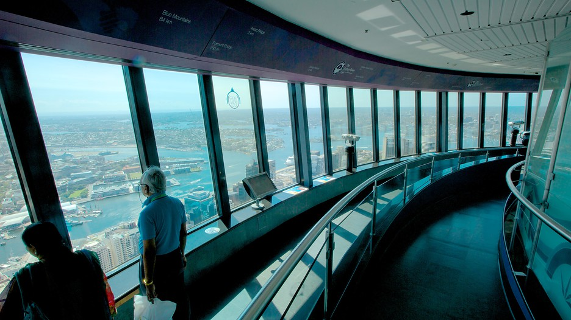

General Information
What is it?
Sydney Tower Eye takes you to the highest point above Sydney for breathtaking 360 degree views of the beautiful harbour city. From the golden beaches to the distant Blue Mountains, you'll be amazed by the views. It is a must for unrivalled views across the city, and far beyond.
Things to Do
The Experience
Your ticket includes the 4D cinema experience - the first produced in Australia - where you can uncover a new dimension to Sydney through a whole new perspective. The engaging film experience is taken to the fourth dimension with evocative in-theatre effects including wind, bubbles and water! The Observation Deck offers state-of-the-art technology, including high powered binoculars and multilingual touch screen panels that tell every visitor interesting facts about the famous landmarks they are looking at.
To order tickets, click here.
Structure
Sections and Details of the Sydney Tower
Sydney Tower is Sydney's tallest structure and the second tallest observation tower in the Southern Hemisphere.The tower stands 309 metres above the ground. Four sections of the tower are open to public, three being occupied by Sydney Tower Dining. 360 Bar and Dining, which offers revolving views of the Sydney skyline, is located on level one of the Sydney Tower. Sydney Tower Buffet, a contemporary self-select restaurant, is located on the tower's second level. Level 3 is reserved for events and is the highest event space in the Southern Hemisphere, and can cater for cocktail functions for 200 people and 156 sit-down guests.
The observation deck, currently called the Sydney Tower Eye, is located on level four of Sydney Tower. To access this level, visitors can buy a pass from the operating company or at the gate. It has a fully enclosed viewing platform featuring 360-degree views of the city and surrounding areas. A 4D cinema has now been added to the fourth floor. The theatre is the first of its kind in Australia; in-theatre effects include wind, bubbles, and fire. It plays a film with footage from various locations in Sydney.
Location
Where you can find it
The tower stands above the Sydney central business district (CBD), located on Market Street, between Pitt and Castlereagh Streets. It is accessible from the Pitt Street Mall, Market Street or Castlereagh Street and sits above the Westfield Sydney (formerly Centrepoint) shopping centre. The tower is open to the public, and is one of the most prominent tourist attractions in the city, being visible from a number of vantage points throughout town and from adjoining suburbs. Easiest access via public transport would be walking from St James train station.